視覺以手繪插畫與活潑對話框交織，打破醫療冷冰冰的刻板印象，營造親切且專業的氛圍。
透過鮮明配色串聯物理治療與檢測空間，突顯「行動、健康、生活」三大主軸。
設計中巧妙融入名人故事與正向標語，將「啟動健康力」化為可觸及的生活美學，
引導大眾在自然、充滿能量的環境中，主動探索身心健康的無限可能。
Healthy Living Festival
良醫生活祭 - 活動設計
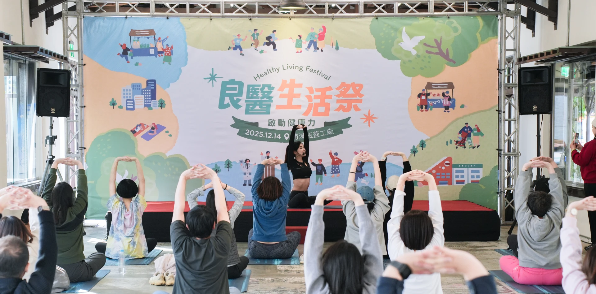Event Design
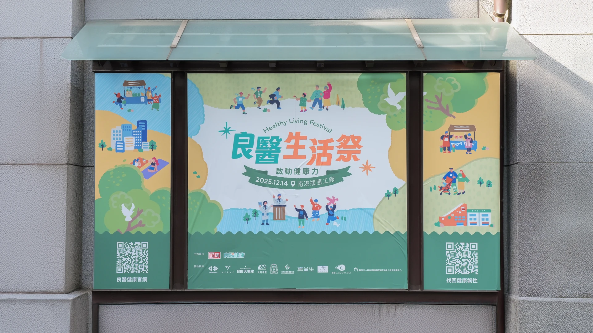
主視覺延伸應用物
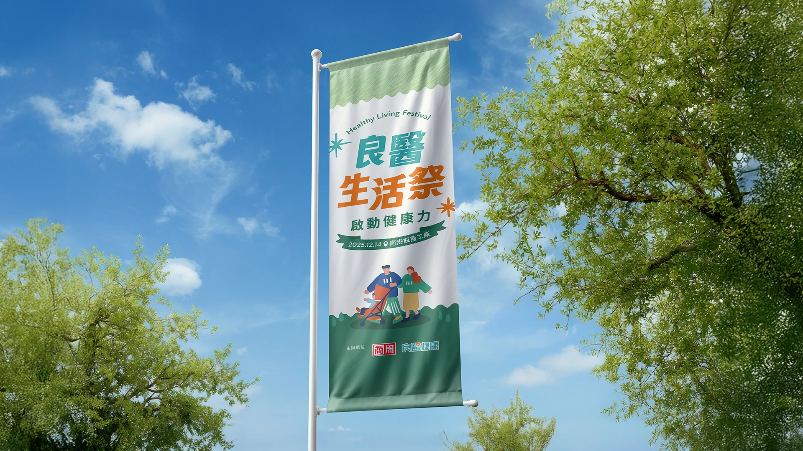
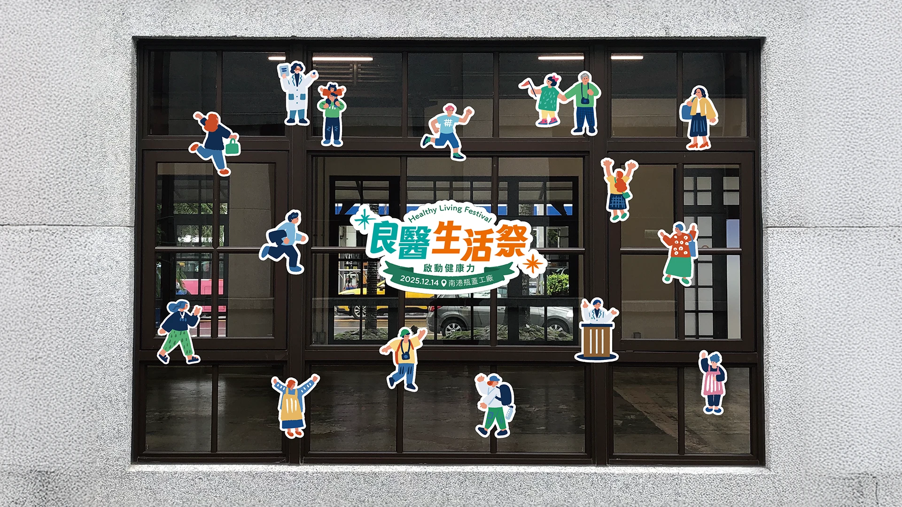
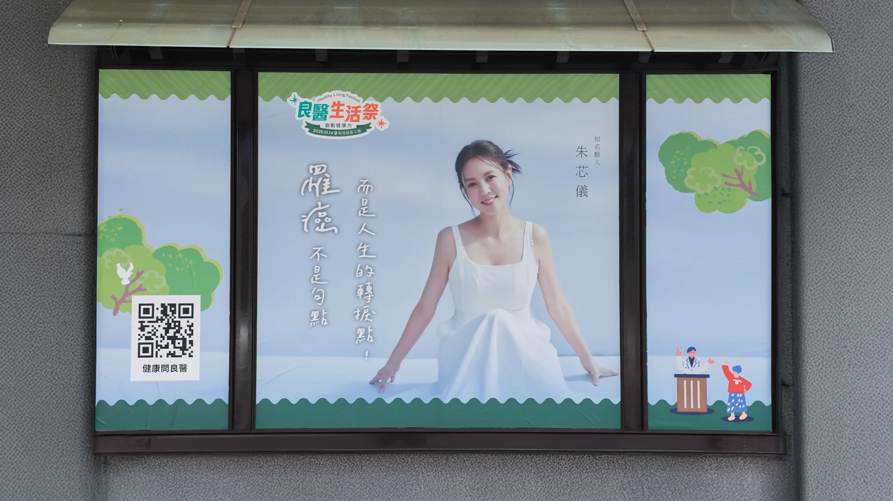
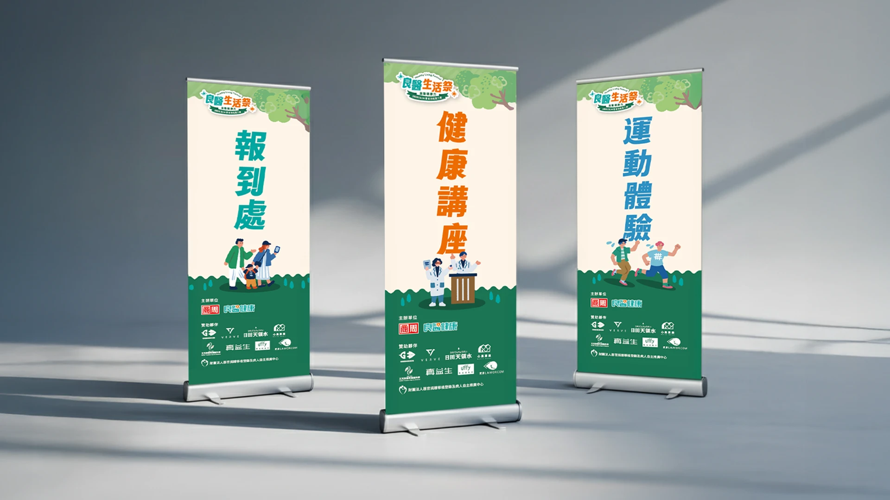
Context｜計畫背景
根據《良醫健康網》最新健檢調查，高達 62.5% 國人忽視健康紅燈，主因在於傳統醫療檢測給人冰冷、嚴肅的疏離感，導致大眾缺乏行動意願。因此我們選址於充滿人文底蘊的南港瓶蓋工廠，旨在透過一場大型感官慶典，將硬核的健檢數據轉化為溫暖且可實踐的生活提案。
Strategy｜設計策略
策略上採視覺「去醫療化」與「情感共融」並行，運用大量手繪插畫與柔和色彩打破場域界限。透過直觀的對話框元素與 #行動力 等社群語彙，降低專業門檻，並將抗癌與運動名人的生命故事轉化為視覺看板，建立強烈的情感共鳴與正向心理暗示。
Solution｜解決方案
全域視覺以「自然綠意」串聯歷史建物，從入口背板到室內視導均維持手繪的一致感。現場設置視覺化數據牆解析健檢白皮書，並配合專業舞台進行超慢跑與瑜珈體驗，結合樂活市集的品牌互動，從「理解、運動、飲食」三方構築完整的健康革命實境。
Impact｜專案影響
本計畫成功將健檢焦慮轉化為積極的生活動力，讓參與者在沈浸式體驗中重拾身心主導權。活動不僅有效驅動大眾的健康管理行動，更深化了《良醫健康網》作為「健康生活陪伴者」的品牌高度，成功於城市中心喚醒大眾對健康革命的共鳴與實踐。
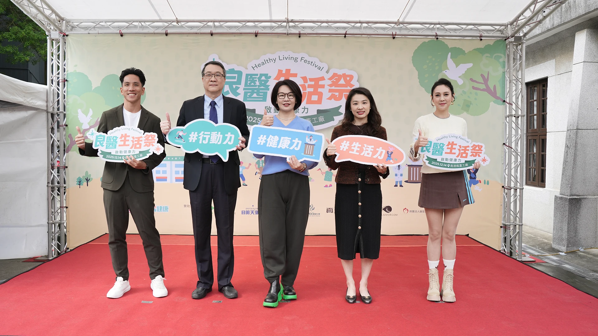
活動背板
 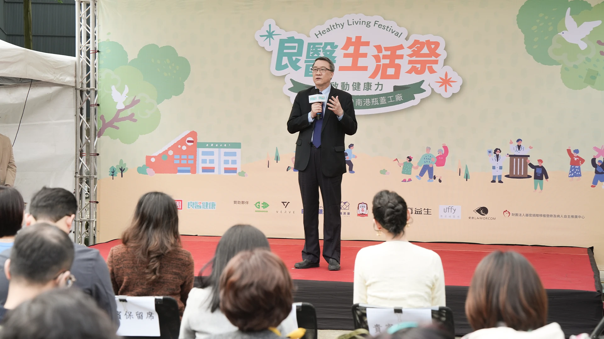
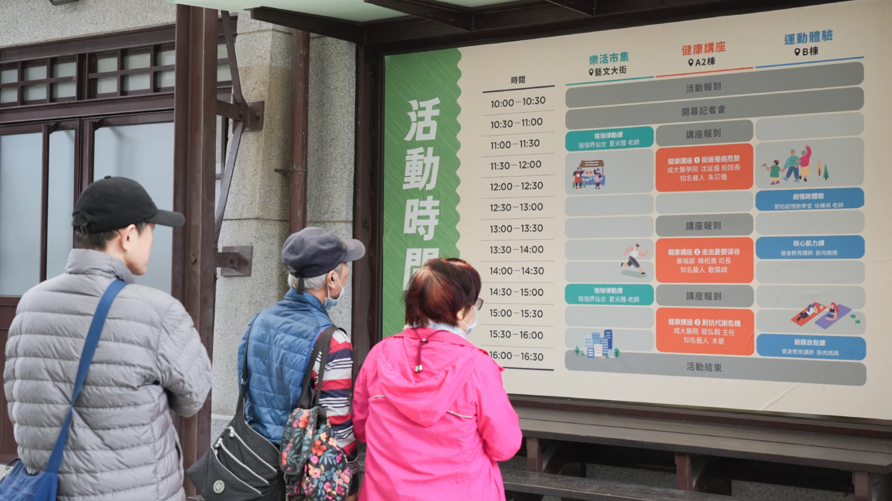
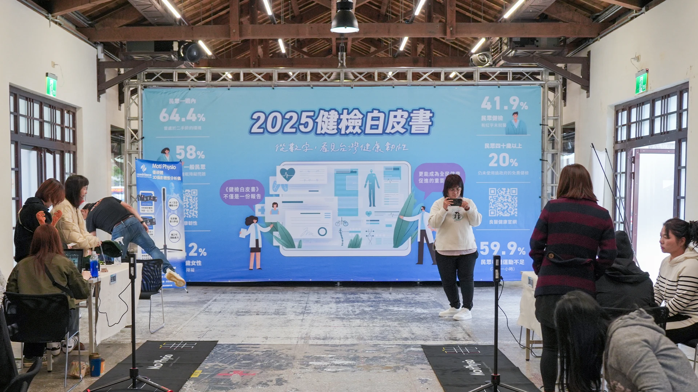
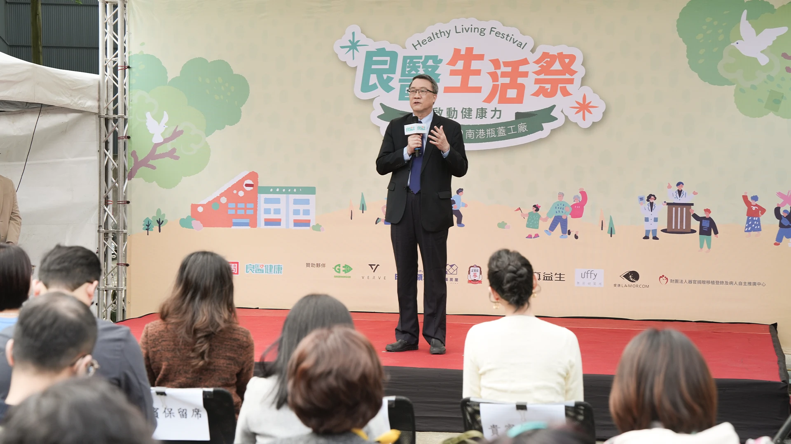
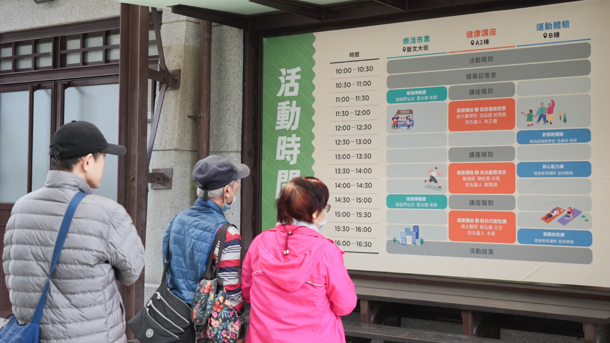
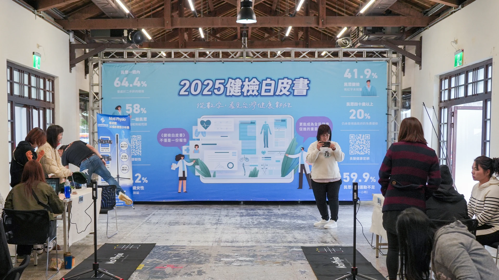
媒體報導
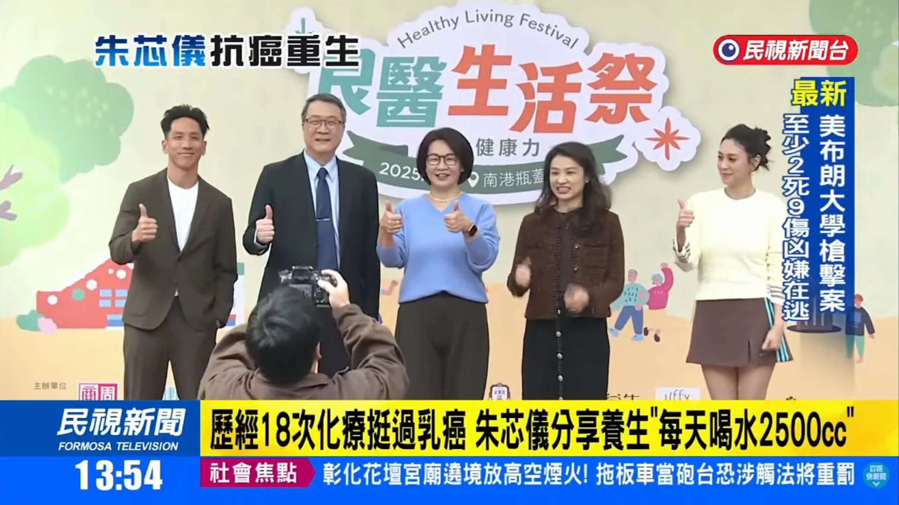
本專案於商周集團時期製作